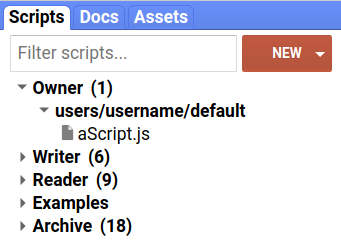
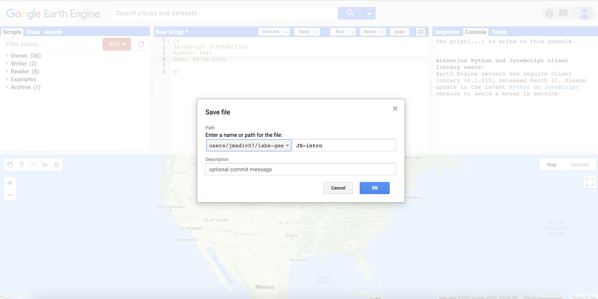

{kind=link}

2 JavaScript Introduction
2.1 Introduction
You will be using Google Earth Engine to perform geospatial data analysis. Google Earth Engine programs comprise a series of statements written in a programming language (JavaScript or Python) that outline steps taken to perform specific tasks using geospatial data.
This lab is an introduction to programming using JavaScript. It introduces key concepts that are important to understand when using Google Earth Engine. However, also view this section as a reference resource to refer back to as you work through the labs and become more proficient in using Google Earth Engine. A good exercise to consolidate your understanding of these concepts is to try and identify where, and explain how, the concepts that are introduced here are used to perform various geospatial data analysis tasks in later labs.
2.2 Setup
Load the Google Earth Engine code editor in your browser via the URL: https://code.earthengine.google.com/.
2.2.1 Code Editor
You will create Google Earth Engine programs using the code editor. The code editor is a web-based interactive development environment (IDE) which provides access to the Google Earth Engine JavaScript API. The Google Earth Engine Developers Guide provides an overview of the code editor tools.
The code editor provides a range of tools that make geospatial data analysis and visualisation easy. These tools will be introduced in the subsequent labs. Some key code editor features include:
- code editor: where you write JavaScript statements.
- Scripts tab: save the JavaScript code for your Google Earth Engine programs.
- Map: web map to visualise spatial data.
- Docs: JavaScript API reference - lists all the in-built functions and operations.
- Console: print results from analysis and metadata.
- Inspector tab: interactive query of spatial objects on the map.
- Geometry tools: digitise vector features.
- Run: Run your script.

2.2.2 Create a Repository
Create a repository called labs-gee where you will store the scripts containing the code for programs you write in the labs. Go to the Scripts tab and click the button to create a new labs-gee repository.
Enter the following code into the Code Editor and save the script to your labs-gee repository. Name the script JS-intro. This code is just some comments that define what the script does and who wrote it and when. Replace the author name and date as appropriate. Comments are not executed when your program runs. Under path in the save widget make sure you select the correct repository (i.e. not default).
/*
JavsScript Introduction
Author: Test
Date: XX-XX-XXXX
*/
2.3 Programming
Programming (coding) is the creation of source code for programs that run on computers. You will be writing programs using JavaScript.
2.3.1 Data Types
Programs need data to work with, perform operations on, and to return outputs from computation and analysis. Geographic and non-geographic phenomena and entities are represented in computer programs as data of specific types. In JavaScript there are seven primitive data types:
- undefined
- String
- Number
- Boolean
- BigInt
- Symbol
- null
undefined types are variables that have not been assigned a value. Variables of null data type intentionally have no value.
All other data types in JavaScript are of type object.
Strings
Variables of string data type contain characters and text which are surrounded by single ' or double " quotes. There are several cases where string variables are used when working with geospatial data; for example, in the metadata of satellite images the name of the sensor used to collect an image could be stored as a string.
What other geospatial data could be stored as a string data type?
Anything that needs to be represented as text data such as place names, road names, names of weather stations.
Enter the following command into the code editor to create a string variable.
var stringVar= 'Hello World!';You have created a string variable called stringVar which contains the text information ‘Hello World!’. This is data that you can use in your program.
You can use the print() operation to print the data in stringVar onto the Console for inspection.
print(stringVar);You should see ‘Hello World!’ displayed in the Console. You have just written a simple program that creates a string object storing text data in a variable named stringVar and prints this text data to a display.
In reality, programs that perform geospatial data analysis will be more complex, contain many variables of different data types, and perform more operations than printing values to a display (instead of printing results to the Console a GIS program might write a .tif file containing the raster output from some analysis).
Numbers
The number data type in JavaScript is in double precision 64 bit floating point format. Add the following code to your script to make two number variables.
var x = 1;
var y = 2;
print(x);
print(y);Storing numbers in variables enables programs to perform mathematical and statistical operations and represent geographic phenomena and entities using quantitative values. For example, spectral reflectance values in remote sensing images are numeric which can be combined mathematically to compute vegetation indices (e.g. NDVI).
Execute the following code to perform some basic maths with the variables x and y.
var z = x + y;
What numeric value do you think variable z will contain? How could you check if the variable z contains the correct value?
3
print(z);
Boolean
The Boolean data type is used to store true or false values. This is useful for storing the results of comparison (equal to, greater than, less than) and logical (and, or, not) operations.
var demoBool = z == 4;
print(demoBool);
var bool1 = x == 1 && y == 2;
var bool2 = y < x;You can read up on JavaScript logical and comparison operators here or look at the table below.
What do you think the value of bool1 and bool2 will be?
bool1: true
bool2: false
| Operator | Description | Example |
|---|---|---|
== |
equal to | x == 5 |
!= |
not equal | x != 5 |
> |
greater than | x > 5 |
< |
less than | x < 5 |
>= |
greater than or equal to | x >= 5 |
<= |
less than or equal to | x <= 5 |
&& |
and | x == 5 && y == 4 |
|| |
or | x == 5 || y == 5 |
! |
not | !(x <= 5) |
Objects
An object in JavaScript is a collection properties where each property is a name:value pair and the value can be any primitive data type (e.g. String, Number, Boolean, null) or a type of object. You can create custom data types using objects; for example, you could create an object to represent a point with two name:value pairs: longitude: 25.55 and latitude: 23.42 where the values are number type coordinates.
You can access properties of an object using the dot operator: . with the format <object name>.<property name>.
var lon = 25.55;
var lat = 23.42;
// create an object named point
var point = {
longitude: lon,
latitude: lat
};
print(point);
// access value in object
print(point.longitude);Arrays
Arrays are a special list-like object that store an ordered collection of elements. Arrays are declared by placing values in square brackets [1, 2, 3] and you access values inside an array using the value’s array index. The first value in an array has an index of 0, the second value has an index of 1, and the final value has an index of \(n-1\) where \(n\) is the number of elements in the array. This is the distinction between arrays and objects where elements are represented by name:value pairs. The elements in arrays are ordered and accessed by their index position; the elements in objects are unordered and accessed by their property name.
Below is an example of how to create an array of numbers that represent years.
var years = [2000, 2001, 2002, 2003, 2004, 2005, 2006];You can see the data inside arrays using the print() command or extract information from arrays using square brackets [] and the index of the element.
print(years);
var year0 = years[0];
print(year0);
var year1 = years[1];
print(year1);You can also put strings inside arrays.
var stringList = ['I', 'am', 'in', 'a', 'list'];
print(stringList);Remember, each item in an array is separated by a comma. You can create n-Dimensional arrays.
var squareArray = [
[2, 3],
[3, 4]
];
print(squareArray);What kind of geospatial data is well suited to being represented using arrays?
raster data (grids of pixels with each pixel assigned a value).
2.3.2 Variables
Variables are named containers that store data.
To create a variable you need to declare it using the var keyword. Once a variable is declared you can put data inside it and use that variable, and therefore the data inside it, in your program. You assign data to a variable using the assignment operator =.
The code block below declares a variable temp and then assigns the value 25 to this variable. As demonstrated by the variable temp1 you can declare a variable and assign values to it in one statement.
var temp;
temp = 25;
var temp1 = 26;Using variables makes code easier to organise and write. For example, if you want to perform multiple operations on temperature data you can refer to the data using the variable name as opposed to either writing out the temperature values or reading them from a file separately for each operation. You can use variables in operations and functions too:
What value do you think the variable tempDiff would store after executing this statement: var tempDiff = temp1 - temp;?
1
print(tempDiff);.
You only need to declare a variable once. var is a reserved keyword; this means a variable cannot be named var. Other reserved keywords in JavaScript include class, function, let, and return with a full list here.
2.3.3 Object Data Model
Except for the seven primitive data types, everything in JavaScript is an object. An object is a programming concept where each object can have properties which describe attributes of the object and methods which are operations or tasks that can be performed.
Real world phenomenon or entities can be represented as objects. For example, you can define an object called field to represent data about fields. The field object can have a numeric array property storing the vertices representing the field’s location, a crop type string property stating what crops are grown in the field, and a numeric type property stating crop yield. The field object could have a computeArea() method which would calculate and return the area of the field. The field object is a spatial object so it could also have methods such as intersects() which would return spatial objects whose extent intersects with the field.
An object definition, which outlines the properties and methods associated with an object, is called a class; you can create multiple objects of the same class in your program.
2.3.4 Functions
There are many methods and operations already defined in JavaScript that you can use in your program. However, there will be cases where you need to create your own operation to perform a task as part of your program; user-defined functions fill this role. First, you declare or define your function which consists of:
- The
functionkeyword. - The name of the function.
- The list of parameters the function takes in separated by commas and enclosed in parentheses (e.g.
function subtraction(number1, number2)). - A list of statements that perform the function tasks enclosed in braces
{ }. - A
returnstatement that specifies what data is returned by a call to the function.
// substraction function
//function declaration
function subtraction(number1, number2) {
var diff = number1 - number2;
return diff;
}Once a function has been declared you can call it from within your program. For example, you can call the function subtraction declared above and pass the two numeric variables temp and temp1 into it as arguments. This will return the difference between the numeric values stored in temp and temp1.
// use subtraction function
var tempFuncDiff = subtraction(temp, temp1);
print(tempFuncDiff);You should see the result -1 printed in the Console.
This is a very simple example of how to declare and use a function. However, creating your own functions is one of the key advantages of programming. You can flexibly combine functions together to create complex workflows.
The following example declares and calls a function convertTempToK that takes in a temperature value in degrees centigrade as a parameter and returns the temperature in Kelvin.
// temperature conversion function
function convertTempToK(tempIn) {
var tempK = tempIn - (-273.15);
return tempK;
}
var tempInK = convertTempToK(temp);
print(tempInK);2.3.5 Syntax and Code Style
There are various syntax rules that need to be followed when writing JavaScript statements. If these rules are not followed your code will not execute and you’ll get a syntax error.
As you see and write JavaScript programs, syntax and style will become apparent. This is not something you need to get right first time but is part of the process of learning to write your own programs. Error messages when you run your program will alert you to where there are syntax errors so you can fix them.
Some important syntax rules:
- Strings are enclosed within
"or'quotes. - Hyphen
-cannot be used except as the subtraction operator (i.e.perth-airportis not valid). - JavaScript identifiers are used to identify variables or functions (i.e. a variable of function name -
x = 23is identified by variable namex). Identifiers are case sensitive and can only start with a letter, underscore (_), or dollar sign ($). - Identifiers cannot start with a number.
- Variables need to be declared with the
varkeyword before they are used. - Keywords (e.g.
var) are reserved and cannot be used as variable or function names.
Code Style
Alongside syntax rules, there are stylistic recommendations for writing JavaScript. These are best adhered to as they’ll make your code easier for you, future you, or somebody else to read. This is important if you require help debugging a script.
Some common style tips:
- Use camel case for variables - first word is lower case and all other words start with an upper case letter with no spaces between words (e.g.
camelCase,perthAirport). - Finish each statement with a semi-colon
var x = 23;. - At most, one statement per line (a statement can span multiple lines if required or improves readability).
- Consistency in code style throughout your script.
- Indent each block of code with two spaces.
- Sensible and logical variable names - variable names should be nouns and describe the variable.
- Sensible and logical function names - function names should be verbs that describe what the function does.
- Keep variable and function names short to avoid typos.
- One variable declaration per line.
The Google JavaScript style guide is a useful resource for writing clear JavaScript programs.
Comments
You can write text in your script that is not executed by the computer. These are comments and are useful to describe what parts of your script are doing. In general, you should aspire to write your code so that it is legible and easy to follow. However, comments augment good code, can help explain how a program works, and are useful to someone else using your script or to future you if you return to working on it.
Some useful things to comment:
- Start the script with brief description of what it does.
- Author and date of script.
- Outline any data or other programs the script depends on.
- Outline what data or results are returned by the script.
- Avoid commenting things which are outlined in documentation elsewhere (e.g. Google Earth Engine documentation).
- Outline what arguments (and type) a function takes and returns.
Lines of code can be commented using // or /* .... */.
/*
Script declares variables to store latitude and longitude values.
Author: XXXXX
Date: 01/02/0304
*/
// longitude
var lon = 25.55;
// latitude
var lat = 23.42;